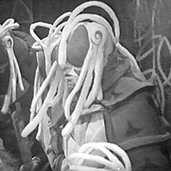

| Home | The Doctors | The Companions | The Villians |
|
|||
|
AnimusThe Animus is an alien intelligence from an unknown planet which lands on the planet Vortis. It can take over any living creature that is in contact with gold and has already taken control of the ant-like Zarbi when the Doctor and his companions arrive on Vortis in the serial The Web Planet.[6] One of Vortis' surviving lifeforms, the Optera, refers to the Animus as "Pwodarauk". The Animus manifests itself within an organic, self-healing palace called the Carcinome. At the end of the story, the Animus's true form is revealed, as resembling an octopus with some arachnid features. The First Doctor, Ian, Barbara and Vicki help the Menoptra to destroy the Animus using the Menoptra's secret weapon, the Isop-tope. The Animus returns or is mentioned in several spin-off stories. In the Missing Adventure Twilight of the Gods by Christopher Bulis, the Second Doctor, Jamie and Victoria return to Vortis and encounter a seed of the Animus which had survived. The New Adventure All-Consuming Fire by Andy Lane identifies the Animus with the Great Old One Lloigor from H. P. Lovecraft's Cthulhu Mythos. An article by Russell T Davies in the Doctor Who Annual 2006 says that the "Greater Animus perished" in the Time War, "and its Carsenome (sic) Walls fell into dust." In 2013 comic book series Prisoners of Time the Doctor, Vicki, Ian and Barbara encounter the Animus on Earth, which it has travelled to with help from a mysterious figure who kidnaps the Doctor's companions.
|